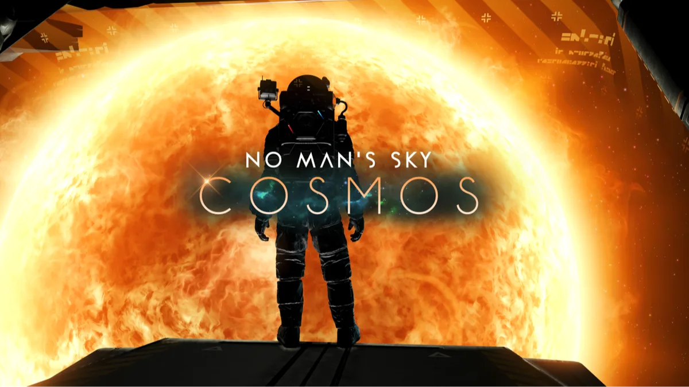

Luiso · 10 de septiembre de 2026
Después de una década de actualizaciones, No Man’s Sky acaba de recibir una de sus mayores transformaciones. Hello Games lanzó Cosmos, la actualización 7.0 que pone el foco precisamente en uno de los elementos que menos había cambiado desde el lanzamiento original: el espacio.
La actualización es gratuita para los jugadores existentes y llega como parte de las celebraciones por el décimo aniversario de No Man’s Sky.
[https://www.youtube.com/watch?v=8MSNYzsNk_E](https://www.youtube.com/watch?v=8MSNYzsNk_E)
La principal intención de Cosmos es convertir el espacio en una parte más activa del universo.
Hello Games incorporó un nuevo mapa estelar que permite detectar diferentes puntos de interés dentro de cada sistema, incluyendo cinturones de asteroides, estaciones y puestos espaciales, restos de enormes naves y otras zonas que esconden actividades y misiones.
También se agregaron nuevos contenidos relacionados con la exploración y el salvamento, incluyendo estructuras que pueden ser saqueadas antes de que su integridad estructural llegue al límite.
Una de las novedades más importantes de Cosmos es la posibilidad de comprar y convertirse en director de una estación espacial.
Los jugadores pueden personalizar tanto su interior como su aspecto exterior, convirtiendo la estación en una especie de base personal dentro del universo.
La actualización también permite construir bases modulares flotantes directamente en el espacio, lo que abre nuevas posibilidades para crear puestos de avanzada, instalaciones comerciales o simplemente lugares desde los que observar los planetas.
Las estaciones pueden convertirse además en el centro de nuevas alianzas entre jugadores.
Estas organizaciones permiten colaborar en la exploración, construir una red de estaciones y competir mediante clasificaciones relacionadas con el tamaño, la riqueza o la influencia de cada alianza.
De esta manera, Cosmos busca darle una dimensión más social a la exploración espacial de No Man’s Sky.
La actualización también incluye una nueva expedición especial llamada Our Journey Continues.
Su propuesta funciona prácticamente como un museo interactivo de No Man’s Sky: cada etapa representa una de las 40 grandes actualizaciones que el juego recibió desde su lanzamiento en 2016.
Los jugadores podrán desbloquear características asociadas a aquellas actualizaciones mientras recorren una especie de línea histórica del desarrollo del título, acompañada por información y comentarios relacionados con su evolución.
Para Hello Games, es una manera de celebrar no solamente el aniversario del juego, sino también el camino recorrido durante una década.
La actualización se encuentra disponible para todas las plataformas, incluidas Switch y Switch 2.